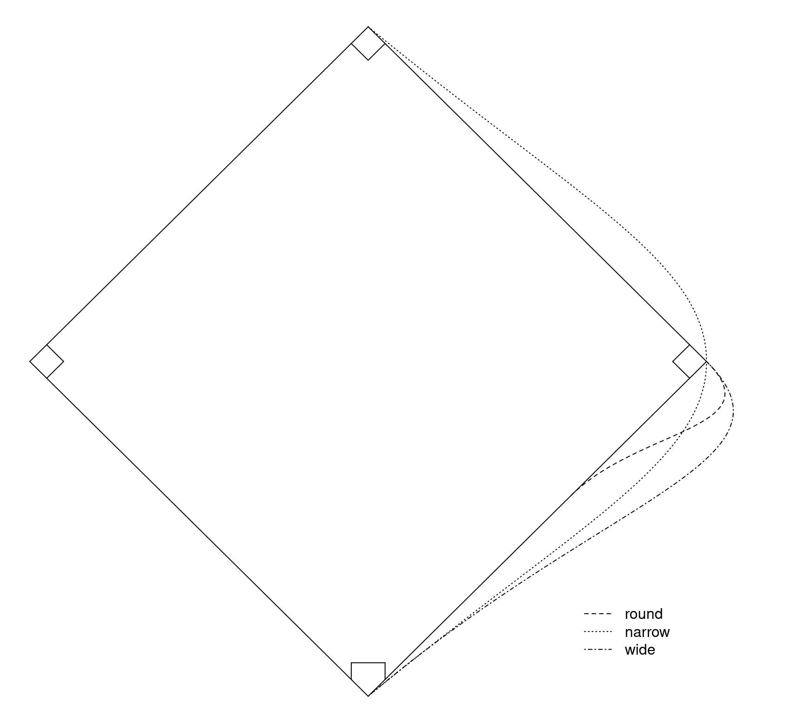
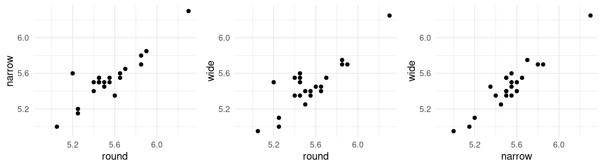
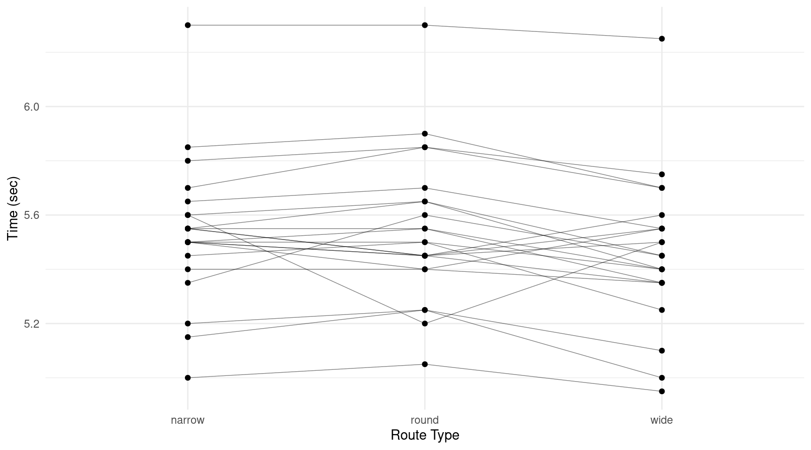
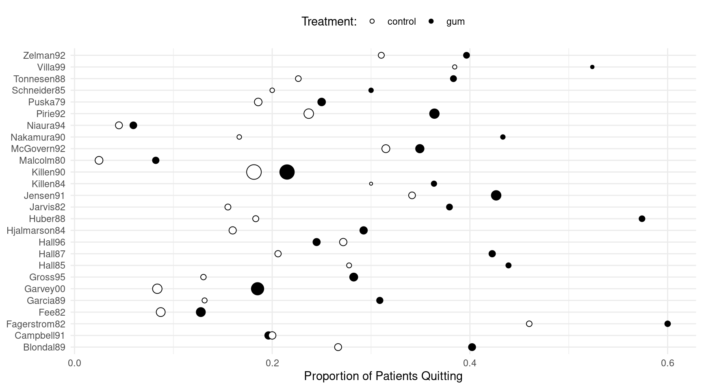
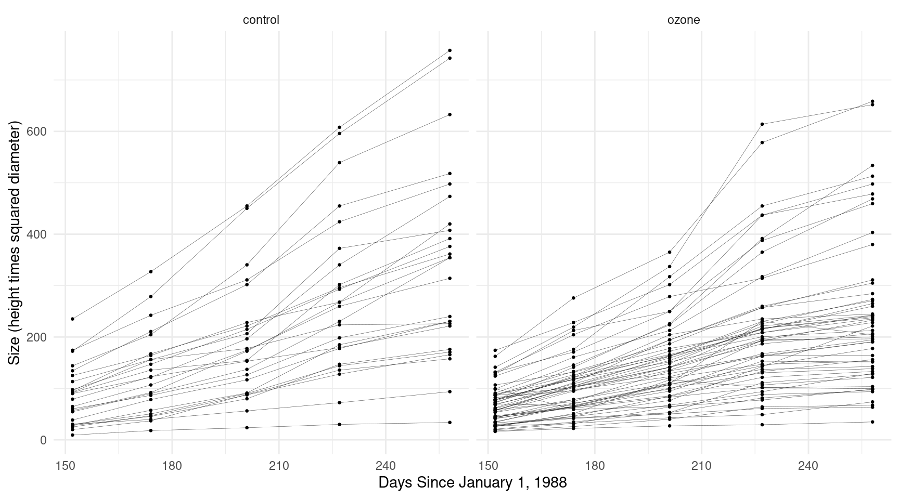

You can also download a PDF copy of this lecture.
Some kinds of designs result in a “factor” with a relatively large number of levels, where each level corresponds to an experimental/observational unit. This can arise for a variety of reasons. Such designs include repeated measures, longitudinal data, panel data, multilevel data, pseudo-replication, within-subjects factors, dependent samples, and clustered data to name a few (these are not mutually exclusive). Having a factor with a large number of levels can cause complications. This is known in econometrics as the “incidental parameter problem.”
Example: Consider a study of the running times of three routes from home to second base on a baseball diamond. 
library(trtools)
head(baserun) round narrow wide
1 5.40 5.50 5.55
2 5.85 5.70 5.75
3 5.20 5.60 5.50
4 5.55 5.50 5.40
5 5.90 5.85 5.70
6 5.45 5.55 5.60There is a considerable “effect” for the player. Players who are relatively fast/slow on one route tend to also be relatively fast/slow on the other routes.
p <- ggplot(baserun, aes(x = round, y = narrow)) + theme_minimal()
p <- p + geom_point() + xlim(4.9,6.3) + ylim(4.95,6.3)
p1 <- p
p <- ggplot(baserun, aes(x = round, y = wide)) + theme_minimal()
p <- p + geom_point() + xlim(4.9,6.3) + ylim(4.95,6.3)
p2 <- p
p <- ggplot(baserun, aes(x = narrow, y = wide)) + theme_minimal()
p <- p + geom_point() + xlim(4.9,6.3) + ylim(4.95,6.3)
p3 <- p
cowplot::plot_grid(p1, p2, p3, align = "h", ncol = 3) These data are in what is sometimes called “wide form” where there are multiple observations per unit (player) in a single row. For plotting and modeling it is often useful to “reshape” the data into “long form” with one observation of the response variable (running time) per row.
library(dplyr)
library(tidyr)
baselong <- baserun %>% mutate(player = factor(letters[1:n()])) %>%
pivot_longer(cols = c(round, narrow, wide),
names_to = "route", values_to = "time")
head(baselong)# A tibble: 6 × 3
player route time
<fct> <chr> <dbl>
1 a round 5.4
2 a narrow 5.5
3 a wide 5.55
4 b round 5.85
5 b narrow 5.7
6 b wide 5.75p <- ggplot(baselong, aes(x = route, y = time)) +
geom_line(aes(group = player), size = 0.25, alpha = 0.5) +
geom_point() + theme_minimal() +
labs(x = "Route Type", y = "Time (sec)")
plot(p) Again note that there appears to be a “player effect” in that the players show similar results over the routes.
What could we do (but not necessarily what we should do) in modeling these data.
We could ignore the effect of player.
m <- lm(time ~ route, data = baselong)
summary(m)$coefficients Estimate Std. Error t value Pr(>|t|)
(Intercept) 5.534091 0.05718 96.7838 3.047e-70
routeround 0.009091 0.08086 0.1124 9.108e-01
routewide -0.075000 0.08086 -0.9275 3.572e-01Or we could model the effect of player as a factor.
m <- lm(time ~ route + player, data = baselong)
summary(m)$coefficients Estimate Std. Error t value Pr(>|t|)
(Intercept) 5.505e+00 0.05205 1.058e+02 1.320e-52
routeround 9.091e-03 0.02603 3.493e-01 7.286e-01
routewide -7.500e-02 0.02603 -2.882e+00 6.208e-03
playerb 2.833e-01 0.07048 4.020e+00 2.366e-04
playerc -5.000e-02 0.07048 -7.094e-01 4.820e-01
playerd 1.139e-15 0.07048 1.615e-14 1.000e+00
playere 3.333e-01 0.07048 4.729e+00 2.550e-05
playerf 5.000e-02 0.07048 7.094e-01 4.820e-01
playerg -1.000e-01 0.07048 -1.419e+00 1.633e-01
playerh -5.000e-02 0.07048 -7.094e-01 4.820e-01
playeri -3.500e-01 0.07048 -4.966e+00 1.189e-05
playerj 3.000e-01 0.07048 4.256e+00 1.140e-04
playerk -3.000e-01 0.07048 -4.256e+00 1.140e-04
playerl 6.667e-02 0.07048 9.459e-01 3.496e-01
playerm -1.667e-02 0.07048 -2.365e-01 8.142e-01
playern -4.833e-01 0.07048 -6.858e+00 2.323e-08
playero -1.667e-02 0.07048 -2.365e-01 8.142e-01
playerp 1.667e-02 0.07048 2.365e-01 8.142e-01
playerq 8.406e-16 0.07048 1.193e-14 1.000e+00
playerr 1.667e-02 0.07048 2.365e-01 8.142e-01
players -8.333e-02 0.07048 -1.182e+00 2.437e-01
playert 6.667e-02 0.07048 9.459e-01 3.496e-01
playeru 1.500e-01 0.07048 2.128e+00 3.923e-02
playerv 8.000e-01 0.07048 1.135e+01 2.238e-14Or maybe we could do something else?
Example: Consider the following data from a meta-analysis of 26 studies of the effect of nicotine gum on smoking cessation.
library(HSAUR3) # for the data
head(smoking) qt tt qc tc
Blondal89 37 92 24 90
Campbell91 21 107 21 105
Fagerstrom82 30 50 23 50
Fee82 23 180 15 172
Garcia89 21 68 5 38
Garvey00 75 405 17 203Here qt and tc are the total number of
subjects in the treatment and control groups, respectively, and
tt and tc are the total number of subjects in
the treatment and control groups, respectively.
These data require some rearranging prior to plotting and analysis.
(Note: I’m using dplyr::select rather than just
select because of a conflict with a function of the same
name with another package I have loaded.)
library(dplyr)
library(tidyr)
quitsmoke <- smoking
quitsmoke$study <- rownames(quitsmoke)
quitsmoke.quits <- quitsmoke %>% dplyr::select(study, qt, qc) %>%
rename(gum = qt, control = qc) %>%
pivot_longer(cols = c(gum,control),
names_to = "treatment", values_to = "quit")
head(quitsmoke.quits)# A tibble: 6 × 3
study treatment quit
<chr> <chr> <int>
1 Blondal89 gum 37
2 Blondal89 control 24
3 Campbell91 gum 21
4 Campbell91 control 21
5 Fagerstrom82 gum 30
6 Fagerstrom82 control 23quitsmoke.total <- quitsmoke %>% dplyr::select(study, tt, tc) %>%
rename(gum = tt, control = tc) %>%
pivot_longer(cols = c(gum,control), names_to = "treatment", values_to = "total")
head(quitsmoke.total)# A tibble: 6 × 3
study treatment total
<chr> <chr> <int>
1 Blondal89 gum 92
2 Blondal89 control 90
3 Campbell91 gum 107
4 Campbell91 control 105
5 Fagerstrom82 gum 50
6 Fagerstrom82 control 50quitsmoke <- full_join(quitsmoke.quits, quitsmoke.total) %>% mutate(study = factor(study)) %>% arrange(study)
head(quitsmoke)# A tibble: 6 × 4
study treatment quit total
<fct> <chr> <int> <int>
1 Blondal89 gum 37 92
2 Blondal89 control 24 90
3 Campbell91 gum 21 107
4 Campbell91 control 21 105
5 Fagerstrom82 gum 30 50
6 Fagerstrom82 control 23 50p <- ggplot(quitsmoke, aes(x = study, y = quit/total,
size = total, fill = treatment)) + geom_point(pch = 21) +
coord_flip() + guides(size = "none") +
scale_fill_manual(values = c("White","Black")) + theme_minimal() +
labs(x = NULL, y = "Proportion of Patients Quitting",
fill = "Treatment:") + theme(legend.position = "top")
plot(p) The studies may vary considerably in terms of (a) the proportion of subjects that quit overall and (b) the effectiveness of the gum treatment relative to the control condition.
What could we do (but not necessarily what we should do) in modeling these data.
We could ignore the effect of study.
m <- glm(cbind(quit, total - quit) ~ treatment,
family = binomial, data = quitsmoke)
summary(m)$coefficients Estimate Std. Error z value Pr(>|z|)
(Intercept) -1.4503 0.04901 -29.594 1.762e-192
treatmentgum 0.5071 0.06309 8.038 9.112e-16Or we could model the main effect of study.
m <- glm(cbind(quit, total - quit) ~ treatment + study,
family = binomial, data = quitsmoke)
summary(m)$coefficients Estimate Std. Error z value Pr(>|z|)
(Intercept) -0.95611 0.16223 -5.8935 3.782e-09
treatmentgum 0.51478 0.06571 7.8337 4.738e-15
studyCampbell91 -0.72182 0.23458 -3.0771 2.090e-03
studyFagerstrom82 0.82087 0.25660 3.1990 1.379e-03
studyFee82 -1.44471 0.23392 -6.1760 6.575e-10
studyGarcia89 -0.51371 0.27679 -1.8560 6.346e-02
studyGarvey00 -1.13119 0.19513 -5.7970 6.750e-09
studyGross95 -0.57476 0.23716 -2.4235 1.537e-02
studyHall85 0.11322 0.28635 0.3954 6.926e-01
studyHall87 -0.08874 0.24238 -0.3661 7.143e-01
studyHall96 -0.36356 0.22648 -1.6052 1.084e-01
studyHjalmarson84 -0.54554 0.23002 -2.3717 1.771e-02
studyHuber88 0.16466 0.25162 0.6544 5.128e-01
studyJarvis82 -0.32539 0.26384 -1.2333 2.175e-01
studyJensen91 0.18524 0.19887 0.9314 3.516e-01
studyKillen84 -0.05394 0.30863 -0.1748 8.613e-01
studyKillen90 -0.71634 0.17393 -4.1186 3.812e-05
studyMalcolm80 -2.28969 0.37670 -6.0784 1.214e-09
studyMcGovern92 -0.02349 0.20432 -0.1150 9.085e-01
studyNakamura90 -0.16186 0.32479 -0.4984 6.182e-01
studyNiaura94 -2.22602 0.37765 -5.8945 3.759e-09
studyPirie92 -0.15991 0.19132 -0.8358 4.033e-01
studyPuska79 -0.59867 0.22560 -2.6536 7.963e-03
studySchneider85 -0.41647 0.33913 -1.2281 2.194e-01
studyTonnesen88 -0.13127 0.25883 -0.5072 6.120e-01
studyVilla99 0.50932 0.33548 1.5182 1.290e-01
studyZelman92 0.08506 0.25163 0.3380 7.353e-01We could also model an interaction of the treatment with the study.
m <- glm(cbind(quit, total - quit) ~ treatment * study,
family = binomial, data = quitsmoke)
summary(m)$coefficients Estimate Std. Error z value Pr(>|z|)
(Intercept) -1.011601 0.2384 -4.243904 2.197e-05
treatmentgum 0.615186 0.3194 1.925966 5.411e-02
studyCampbell91 -0.374693 0.3411 -1.098520 2.720e-01
studyFagerstrom82 0.851258 0.3706 2.297064 2.162e-02
studyFee82 -1.336595 0.3604 -3.709126 2.080e-04
studyGarcia89 -0.875469 0.5358 -1.633834 1.023e-01
studyGarvey00 -1.380932 0.3479 -3.969605 7.199e-05
studyGross95 -0.885519 0.4985 -1.776429 7.566e-02
studyHall85 0.056089 0.4419 0.126927 8.990e-01
studyHall87 -0.338326 0.3831 -0.883128 3.772e-01
studyHall96 0.026317 0.3254 0.080884 9.355e-01
studyHjalmarson84 -0.646627 0.3622 -1.785045 7.425e-02
studyHuber88 -0.482324 0.4100 -1.176276 2.395e-01
studyJarvis82 -0.682995 0.4340 -1.573798 1.155e-01
studyJensen91 0.354821 0.3332 1.064752 2.870e-01
studyKillen84 0.164303 0.5431 0.302551 7.622e-01
studyKillen90 -0.494459 0.2602 -1.899981 5.744e-02
studyMalcolm80 -2.660471 0.6314 -4.213818 2.511e-05
studyMcGovern92 0.234572 0.3055 0.767904 4.425e-01
studyNakamura90 -0.597837 0.5448 -1.097331 2.725e-01
studyNiaura94 -2.044756 0.5644 -3.622682 2.916e-04
studyPirie92 -0.157780 0.2881 -0.547567 5.840e-01
studyPuska79 -0.465665 0.3396 -1.371344 1.703e-01
studySchneider85 -0.374693 0.5149 -0.727661 4.668e-01
studyTonnesen88 -0.217065 0.4056 -0.535119 5.926e-01
studyVilla99 0.541597 0.4683 1.156483 2.475e-01
studyZelman92 0.213093 0.3706 0.574934 5.653e-01
treatmentgum:studyCampbell91 -0.638716 0.4699 -1.359285 1.741e-01
treatmentgum:studyFagerstrom82 -0.049378 0.5156 -0.095762 9.237e-01
treatmentgum:studyFee82 -0.187742 0.4742 -0.395873 6.922e-01
treatmentgum:studyGarcia89 0.466259 0.6334 0.736093 4.617e-01
treatmentgum:studyGarvey00 0.295743 0.4273 0.692111 4.889e-01
treatmentgum:studyGross95 0.349557 0.5756 0.607252 5.437e-01
treatmentgum:studyHall85 0.095203 0.5827 0.163387 8.702e-01
treatmentgum:studyHall87 0.422366 0.4997 0.845244 3.980e-01
treatmentgum:studyHall96 -0.755913 0.4542 -1.664447 9.602e-02
treatmentgum:studyHjalmarson84 0.159542 0.4712 0.338590 7.349e-01
treatmentgum:studyHuber88 1.177232 0.5377 2.189539 2.856e-02
treatmentgum:studyJarvis82 0.586934 0.5539 1.059684 2.893e-01
treatmentgum:studyJensen91 -0.254387 0.4191 -0.607000 5.439e-01
treatmentgum:studyKillen84 -0.327504 0.6621 -0.494666 6.208e-01
treatmentgum:studyKillen90 -0.404172 0.3504 -1.153314 2.488e-01
treatmentgum:studyMalcolm80 0.643954 0.7908 0.814266 4.155e-01
treatmentgum:studyMcGovern92 -0.460208 0.4107 -1.120609 2.625e-01
treatmentgum:studyNakamura90 0.725988 0.6912 1.050312 2.936e-01
treatmentgum:studyNiaura94 -0.318839 0.7592 -0.419943 6.745e-01
treatmentgum:studyPirie92 -0.003513 0.3863 -0.009096 9.927e-01
treatmentgum:studyPuska79 -0.236532 0.4544 -0.520520 6.027e-01
treatmentgum:studySchneider85 -0.076189 0.6849 -0.111241 9.114e-01
treatmentgum:studyTonnesen88 0.138056 0.5294 0.260782 7.943e-01
treatmentgum:studyVilla99 -0.049872 0.6749 -0.073900 9.411e-01
treatmentgum:studyZelman92 -0.236532 0.5046 -0.468741 6.393e-01Or maybe we could do something else?
Example: Consider the following data from a study of the growth of Sitka spruce trees under two experimental conditions.
library(MASS)
head(Sitka, 10) # note that size is on log scale size Time tree treat
1 4.51 152 1 ozone
2 4.98 174 1 ozone
3 5.41 201 1 ozone
4 5.90 227 1 ozone
5 6.15 258 1 ozone
6 4.24 152 2 ozone
7 4.20 174 2 ozone
8 4.68 201 2 ozone
9 4.92 227 2 ozone
10 4.96 258 2 ozonep <- ggplot(Sitka, aes(x = Time, y = exp(size))) +
geom_line(aes(group = tree), alpha = 0.75, size = 0.1) +
facet_wrap(~ treat) + geom_point(size = 0.5) +
labs(y = "Size (height times squared diameter)",
x = "Days Since January 1, 1988") + theme_minimal()
plot(p) Note that trees vary considerably in terms of their growth trajectories.
What could we do (but not necessarily what we should do) in modeling these data.
We could ignore the effect of tree.
m <- lm(exp(size) ~ Time * treat, data = Sitka)
summary(m)$coefficients Estimate Std. Error t value Pr(>|t|)
(Intercept) -305.1231 52.7109 -5.789 1.458e-08
Time 2.5093 0.2561 9.799 2.029e-20
treatozone 110.6754 63.7554 1.736 8.336e-02
Time:treatozone -0.7881 0.3097 -2.544 1.133e-02Or we could model the effect of tree.
Sitka$tree <- factor(Sitka$tree)
m <- lm(exp(size) ~ Time * treat + Time * tree, data = Sitka)
summary(m)$coefficients Estimate Std. Error t value Pr(>|t|)
(Intercept) -1.974e+02 48.0069 -4.11226 5.405e-05
Time 1.408e+00 0.2332 6.03958 5.931e-09
treatozone -2.912e+02 67.8920 -4.28865 2.618e-05
tree2 4.279e+02 67.8920 6.30301 1.412e-09
tree3 3.970e+02 67.8920 5.84783 1.642e-08
tree4 3.780e+02 67.8920 5.56735 6.985e-08
tree5 -1.316e+02 67.8920 -1.93822 5.378e-02
tree6 1.408e+02 67.8920 2.07383 3.918e-02
tree7 3.721e+02 67.8920 5.48016 1.084e-07
tree8 2.970e+02 67.8920 4.37387 1.829e-05
tree9 6.928e-01 67.8920 0.01020 9.919e-01
tree10 4.328e+02 67.8920 6.37442 9.499e-10
tree11 3.807e+02 67.8920 5.60680 5.715e-08
tree12 2.502e+02 67.8920 3.68495 2.835e-04
tree13 2.475e+02 67.8920 3.64509 3.285e-04
tree14 3.652e+02 67.8920 5.37941 1.791e-07
tree15 5.513e+02 67.8920 8.11978 2.555e-14
tree16 3.864e+02 67.8920 5.69212 3.691e-08
tree17 3.966e+02 67.8920 5.84235 1.690e-08
tree18 4.356e+02 67.8920 6.41580 7.540e-10
tree19 4.143e+02 67.8920 6.10243 4.227e-09
tree20 3.509e+02 67.8920 5.16904 4.998e-07
tree21 3.698e+02 67.8920 5.44752 1.277e-07
tree22 3.207e+02 67.8920 4.72312 3.979e-06
tree23 2.703e+02 67.8920 3.98059 9.144e-05
tree24 4.809e+02 67.8920 7.08401 1.587e-11
tree25 2.202e+02 67.8920 3.24404 1.348e-03
tree26 3.694e+02 67.8920 5.44055 1.322e-07
tree27 2.629e+02 67.8920 3.87247 1.394e-04
tree28 3.235e+02 67.8920 4.76549 3.287e-06
tree29 4.926e+01 67.8920 0.72562 4.688e-01
tree30 2.900e+02 67.8920 4.27110 2.817e-05
tree31 3.625e+02 67.8920 5.33967 2.179e-07
tree32 3.192e+02 67.8920 4.70104 4.393e-06
tree33 3.228e+02 67.8920 4.75483 3.449e-06
tree34 3.562e+02 67.8920 5.24674 3.433e-07
tree35 1.630e+02 67.8920 2.40061 1.714e-02
tree36 4.550e+02 67.8920 6.70248 1.483e-10
tree37 -8.903e+01 67.8920 -1.31131 1.910e-01
tree38 1.929e+02 67.8920 2.84066 4.894e-03
tree39 1.368e+02 67.8920 2.01454 4.508e-02
tree40 3.077e+02 67.8920 4.53271 9.242e-06
tree41 -1.973e+02 67.8920 -2.90579 4.010e-03
tree42 3.191e+02 67.8920 4.70040 4.406e-06
tree43 2.338e+02 67.8920 3.44344 6.790e-04
tree44 3.063e+02 67.8920 4.51129 1.014e-05
tree45 4.260e+02 67.8920 6.27499 1.648e-09
tree46 2.801e+02 67.8920 4.12501 5.133e-05
tree47 3.289e+02 67.8920 4.84461 2.293e-06
tree48 3.643e+02 67.8920 5.36604 1.914e-07
tree49 4.055e+02 67.8920 5.97237 8.497e-09
tree50 3.933e+02 67.8920 5.79232 2.196e-08
tree51 3.517e+02 67.8920 5.18101 4.719e-07
tree52 2.664e+02 67.8920 3.92443 1.140e-04
tree53 4.724e+02 67.8920 6.95807 3.347e-11
tree54 3.553e+02 67.8920 5.23390 3.654e-07
tree55 1.225e+02 67.8920 1.80458 7.241e-02
tree56 -4.331e+02 67.8920 -6.37975 9.221e-10
tree57 8.878e+01 67.8920 1.30764 1.923e-01
tree58 -1.151e+02 67.8920 -1.69465 9.146e-02
tree59 -2.000e+02 67.8920 -2.94616 3.538e-03
tree60 -1.659e+02 67.8920 -2.44333 1.528e-02
tree61 -4.666e+02 67.8920 -6.87237 5.534e-11
tree62 -2.055e+01 67.8920 -0.30272 7.624e-01
tree63 1.116e+01 67.8920 0.16441 8.695e-01
tree64 1.743e+02 67.8920 2.56720 1.087e-02
tree65 -4.367e+01 67.8920 -0.64325 5.207e-01
tree66 8.094e+00 67.8920 0.11922 9.052e-01
tree67 -1.051e+02 67.8920 -1.54801 1.230e-01
tree68 -2.049e+02 67.8920 -3.01786 2.824e-03
tree69 -1.764e+02 67.8920 -2.59776 9.971e-03
tree70 -7.682e+01 67.8920 -1.13154 2.590e-01
tree71 -2.491e+02 67.8920 -3.66955 3.001e-04
tree72 -9.720e+01 67.8920 -1.43172 1.535e-01
tree73 -3.402e+02 67.8920 -5.01033 1.063e-06
tree74 -1.164e+02 67.8920 -1.71433 8.778e-02
tree75 -9.117e+01 67.8920 -1.34293 1.806e-01
tree76 -1.130e+01 67.8920 -0.16645 8.679e-01
tree77 1.336e+02 67.8920 1.96726 5.032e-02
tree78 -3.176e+02 67.8920 -4.67841 4.861e-06
Time:treatozone 2.284e+00 0.3298 6.92483 4.069e-11
Time:tree2 -2.875e+00 0.3298 -8.71844 5.009e-16
Time:tree3 -2.695e+00 0.3298 -8.17016 1.846e-14
Time:tree4 -2.382e+00 0.3298 -7.22182 6.948e-12
Time:tree5 7.245e-01 0.3298 2.19679 2.900e-02
Time:tree6 -7.954e-01 0.3298 -2.41183 1.663e-02
Time:tree7 -2.413e+00 0.3298 -7.31591 3.932e-12
Time:tree8 -1.984e+00 0.3298 -6.01477 6.775e-09
Time:tree9 2.843e-01 0.3298 0.86199 3.896e-01
Time:tree10 -2.976e+00 0.3298 -9.02271 6.442e-17
Time:tree11 -2.571e+00 0.3298 -7.79504 2.025e-13
Time:tree12 -1.596e+00 0.3298 -4.83862 2.356e-06
Time:tree13 -1.537e+00 0.3298 -4.66113 5.250e-06
Time:tree14 -2.270e+00 0.3298 -6.88393 5.172e-11
Time:tree15 -3.608e+00 0.3298 -10.93813 8.237e-23
Time:tree16 -2.719e+00 0.3298 -8.24443 1.140e-14
Time:tree17 -2.382e+00 0.3298 -7.22131 6.970e-12
Time:tree18 -3.216e+00 0.3298 -9.75136 4.171e-19
Time:tree19 -2.932e+00 0.3298 -8.88966 1.586e-16
Time:tree20 -2.249e+00 0.3298 -6.81802 7.598e-11
Time:tree21 -2.471e+00 0.3298 -7.49216 1.337e-12
Time:tree22 -2.335e+00 0.3298 -7.08091 1.616e-11
Time:tree23 -1.807e+00 0.3298 -5.47996 1.085e-07
Time:tree24 -3.526e+00 0.3298 -10.69227 4.959e-22
Time:tree25 -1.856e+00 0.3298 -5.62600 5.182e-08
Time:tree26 -2.744e+00 0.3298 -8.32071 6.939e-15
Time:tree27 -1.919e+00 0.3298 -5.81946 1.905e-08
Time:tree28 -2.034e+00 0.3298 -6.16742 2.971e-09
Time:tree29 -7.204e-02 0.3298 -0.21842 8.273e-01
Time:tree30 -1.418e+00 0.3298 -4.29893 2.508e-05
Time:tree31 -2.592e+00 0.3298 -7.85878 1.354e-13
Time:tree32 -2.065e+00 0.3298 -6.26045 1.785e-09
Time:tree33 -2.003e+00 0.3298 -6.07233 4.973e-09
Time:tree34 -2.406e+00 0.3298 -7.29509 4.461e-12
Time:tree35 -4.642e-01 0.3298 -1.40749 1.606e-01
Time:tree36 -3.141e+00 0.3298 -9.52223 2.072e-18
Time:tree37 1.177e+00 0.3298 3.56966 4.326e-04
Time:tree38 -1.310e+00 0.3298 -3.97191 9.462e-05
Time:tree39 -5.341e-01 0.3298 -1.61936 1.067e-01
Time:tree40 -2.079e+00 0.3298 -6.30474 1.398e-09
Time:tree41 1.636e+00 0.3298 4.96135 1.337e-06
Time:tree42 -2.073e+00 0.3298 -6.28455 1.563e-09
Time:tree43 -1.618e+00 0.3298 -4.90595 1.729e-06
Time:tree44 -2.231e+00 0.3298 -6.76407 1.039e-10
Time:tree45 -3.171e+00 0.3298 -9.61599 1.078e-18
Time:tree46 -1.813e+00 0.3298 -5.49839 9.895e-08
Time:tree47 -2.234e+00 0.3298 -6.77472 9.769e-11
Time:tree48 -2.715e+00 0.3298 -8.23303 1.228e-14
Time:tree49 -2.981e+00 0.3298 -9.03704 5.844e-17
Time:tree50 -2.937e+00 0.3298 -8.90612 1.419e-16
Time:tree51 -2.610e+00 0.3298 -7.91242 9.634e-14
Time:tree52 -2.001e+00 0.3298 -6.06620 5.140e-09
Time:tree53 -3.369e+00 0.3298 -10.21559 1.548e-20
Time:tree54 -2.536e+00 0.3298 -7.68847 3.954e-13
Time:tree55 -1.729e-01 0.3298 -0.52409 6.007e-01
Time:tree56 3.545e+00 0.3298 10.74990 3.260e-22
Time:tree57 -1.251e-01 0.3298 -0.37938 7.047e-01
Time:tree58 1.250e+00 0.3298 3.79115 1.903e-04
Time:tree59 1.411e+00 0.3298 4.27870 2.729e-05
Time:tree60 1.627e+00 0.3298 4.93380 1.519e-06
Time:tree61 4.085e+00 0.3298 12.38687 1.672e-27
Time:tree62 3.715e-01 0.3298 1.12633 2.612e-01
Time:tree63 -4.085e-02 0.3298 -0.12386 9.015e-01
Time:tree64 -1.181e+00 0.3298 -3.58083 4.155e-04
Time:tree65 4.166e-01 0.3298 1.26329 2.077e-01
Time:tree66 6.261e-03 0.3298 0.01898 9.849e-01
Time:tree67 1.716e+00 0.3298 5.20262 4.252e-07
Time:tree68 1.511e+00 0.3298 4.58163 7.462e-06
Time:tree69 1.501e+00 0.3298 4.55058 8.549e-06
Time:tree70 1.075e+00 0.3298 3.25801 1.286e-03
Time:tree71 2.398e+00 0.3298 7.27149 5.147e-12
Time:tree72 1.238e+00 0.3298 3.75322 2.196e-04
Time:tree73 3.602e+00 0.3298 10.92026 9.389e-23
Time:tree74 1.051e+00 0.3298 3.18550 1.639e-03
Time:tree75 6.025e-01 0.3298 1.82687 6.898e-02
Time:tree76 9.330e-02 0.3298 0.28289 7.775e-01
Time:tree77 -8.044e-01 0.3298 -2.43887 1.547e-02
Time:tree78 2.343e+00 0.3298 7.10522 1.398e-11Or maybe we could do something else?
A marginal model ignores the many-leveled factor. One approach to estimating such models is to use what can be viewed as an extension of quasi-likelihood called generalized estimating equations (GEE). This approach actually involves two parts.
Estimate the model using generalized estimating equations. This uses an iterative generalized least squares that uses an estimated “working” correlation structure. This can be viewed as an extension of the iteratively weighted least squares algorithm we used earlier.
Compute robust estimates of standard errors to account for heteroscedasticity and correlations among observations. These are designed to deal with the fact that our observations are not independent.
Example: Consider two approaches to the
baserun data: ignoring the player effect entirely and a
marginal model with inferences based on GEE.
library(geepack)
# generalized linear model, but same as lm(time ~ route, data = baselong)
m.glm <- glm(time ~ route, family = gaussian(link = identity), data = baselong)
# generalized estimating equations
m.gee <- geeglm(time ~ route, family = gaussian(link = identity),
id = player, corstr = "exchangeable", data = baselong)Note: The data must be sorted by the id
variable, and the id variable must be a factor or
a number (not character).
Comparing inferences for the model parameters.
summary(m.glm)$coefficients Estimate Std. Error t value Pr(>|t|)
(Intercept) 5.534091 0.05718 96.7838 3.047e-70
routeround 0.009091 0.08086 0.1124 9.108e-01
routewide -0.075000 0.08086 -0.9275 3.572e-01summary(m.gee)
Call:
geeglm(formula = time ~ route, family = gaussian(link = identity),
data = baselong, id = player, corstr = "exchangeable")
Coefficients:
Estimate Std.err Wald Pr(>|W|)
(Intercept) 5.53409 0.05411 10461.38 < 2e-16 ***
routeround 0.00909 0.02564 0.13 0.72
routewide -0.07500 0.01839 16.63 4.6e-05 ***
---
Signif. codes: 0 '***' 0.001 '**' 0.01 '*' 0.05 '.' 0.1 ' ' 1
Correlation structure = exchangeable
Estimated Scale Parameters:
Estimate Std.err
(Intercept) 0.0687 0.0278
Link = identity
Estimated Correlation Parameters:
Estimate Std.err
alpha 0.896 0.0585
Number of clusters: 22 Maximum cluster size: 3 Comparing inferences for the expected time for each route.
library(emmeans)
emmeans(m.glm, ~route) route emmean SE df lower.CL upper.CL
narrow 5.53 0.0572 63 5.42 5.65
round 5.54 0.0572 63 5.43 5.66
wide 5.46 0.0572 63 5.34 5.57
Confidence level used: 0.95 emmeans(m.gee, ~route) route emmean SE df asymp.LCL asymp.UCL
narrow 5.53 0.0541 Inf 5.43 5.64
round 5.54 0.0566 Inf 5.43 5.65
wide 5.46 0.0568 Inf 5.35 5.57
Covariance estimate used: vbeta
Confidence level used: 0.95 trtools::contrast(m.glm, a = list(route = c("narrow","round","wide"))) estimate se lower upper tvalue df pvalue
5.53 0.0572 5.42 5.65 96.8 63 3.05e-70
5.54 0.0572 5.43 5.66 96.9 63 2.75e-70
5.46 0.0572 5.34 5.57 95.5 63 7.16e-70trtools::contrast(m.gee, a = list(route = c("narrow","round","wide"))) estimate se lower upper tvalue df pvalue
5.53 0.0541 5.43 5.64 102.3 63 9.59e-72
5.54 0.0566 5.43 5.66 97.9 63 1.48e-70
5.46 0.0568 5.35 5.57 96.1 63 4.88e-70Comparing inferences for the differences in expected time between routes.
pairs(emmeans(m.glm, ~route), adjust = "none", infer = TRUE) contrast estimate SE df lower.CL upper.CL t.ratio p.value
narrow - round -0.0091 0.0809 63 -0.1707 0.152 -0.112 0.9110
narrow - wide 0.0750 0.0809 63 -0.0866 0.237 0.927 0.3570
round - wide 0.0841 0.0809 63 -0.0775 0.246 1.040 0.3020
Confidence level used: 0.95 pairs(emmeans(m.gee, ~route), adjust = "none", infer = TRUE) contrast estimate SE df asymp.LCL asymp.UCL z.ratio p.value
narrow - round -0.0091 0.0256 Inf -0.0593 0.0412 -0.350 0.7230
narrow - wide 0.0750 0.0184 Inf 0.0389 0.1111 4.080 <.0001
round - wide 0.0841 0.0307 Inf 0.0239 0.1443 2.740 0.0060
Confidence level used: 0.95 trtools::contrast(m.glm,
a = list(route = c("narrow","narrow","round")),
b = list(route = c("round","wide","wide")),
cnames = c("narrow - round","narrow - wide","round - wide")) estimate se lower upper tvalue df pvalue
narrow - round -0.00909 0.0809 -0.1707 0.153 -0.112 63 0.911
narrow - wide 0.07500 0.0809 -0.0866 0.237 0.927 63 0.357
round - wide 0.08409 0.0809 -0.0775 0.246 1.040 63 0.302trtools::contrast(m.gee,
a = list(route = c("narrow","narrow","round")),
b = list(route = c("round","wide","wide")),
cnames = c("narrow - round","narrow - wide","round - wide")) estimate se lower upper tvalue df pvalue
narrow - round -0.00909 0.0256 -0.0603 0.0421 -0.355 63 0.72410
narrow - wide 0.07500 0.0184 0.0382 0.1118 4.077 63 0.00013
round - wide 0.08409 0.0307 0.0227 0.1455 2.737 63 0.00805Example: Consider two approaches to the
smoking data: ignoring the study effect entirely and a
marginal model with inferences based on GEE.
head(quitsmoke)# A tibble: 6 × 4
study treatment quit total
<fct> <chr> <int> <int>
1 Blondal89 gum 37 92
2 Blondal89 control 24 90
3 Campbell91 gum 21 107
4 Campbell91 control 21 105
5 Fagerstrom82 gum 30 50
6 Fagerstrom82 control 23 50m.glm <- glm(cbind(quit, total - quit) ~ treatment,
family = binomial, data = quitsmoke)
m.gee <- geeglm(cbind(quit, total - quit) ~ treatment,
family = binomial, data = quitsmoke,
id = study, corstr = "exchangeable")Comparing inferences for the model parameters.
summary(m.glm)$coefficients Estimate Std. Error z value Pr(>|z|)
(Intercept) -1.450 0.0490 -29.59 1.76e-192
treatmentgum 0.507 0.0631 8.04 9.11e-16summary(m.gee)
Call:
geeglm(formula = cbind(quit, total - quit) ~ treatment, family = binomial,
data = quitsmoke, id = study, corstr = "exchangeable")
Coefficients:
Estimate Std.err Wald Pr(>|W|)
(Intercept) -1.444 0.116 155.5 < 2e-16 ***
treatmentgum 0.501 0.078 41.2 1.4e-10 ***
---
Signif. codes: 0 '***' 0.001 '**' 0.01 '*' 0.05 '.' 0.1 ' ' 1
Correlation structure = exchangeable
Estimated Scale Parameters:
Estimate Std.err
(Intercept) 0.0601 0.0158
Link = identity
Estimated Correlation Parameters:
Estimate Std.err
alpha 0.445 0.229
Number of clusters: 26 Maximum cluster size: 2 Estimating the probability of quitting.
emmeans(m.glm, ~treatment, type = "response") treatment prob SE df asymp.LCL asymp.UCL
control 0.19 0.00754 Inf 0.176 0.205
gum 0.28 0.00801 Inf 0.265 0.296
Confidence level used: 0.95
Intervals are back-transformed from the logit scale emmeans(m.gee, ~treatment, type = "response") treatment prob SE df asymp.LCL asymp.UCL
control 0.191 0.0179 Inf 0.158 0.229
gum 0.280 0.0255 Inf 0.233 0.333
Covariance estimate used: vbeta
Confidence level used: 0.95
Intervals are back-transformed from the logit scale trtools::contrast(m.glm, a = list(treatment = c("control","gum")),
tf = plogis, cnames = c("control","gum")) estimate lower upper
control 0.19 0.176 0.205
gum 0.28 0.265 0.296trtools::contrast(m.gee, a = list(treatment = c("control","gum")),
tf = plogis, cnames = c("control","gum")) estimate lower upper
control 0.191 0.158 0.229
gum 0.280 0.233 0.333Estimating the odds ratio for the effect of the gum treatment.
pairs(emmeans(m.glm, ~treatment, type = "response"),
reverse = TRUE, infer = TRUE) contrast odds.ratio SE df asymp.LCL asymp.UCL null z.ratio p.value
gum / control 1.66 0.105 Inf 1.47 1.88 1 8.040 <.0001
Confidence level used: 0.95
Intervals are back-transformed from the log odds ratio scale
Tests are performed on the log odds ratio scale pairs(emmeans(m.gee, ~treatment, type = "response"),
reverse = TRUE, infer = TRUE) contrast odds.ratio SE df asymp.LCL asymp.UCL null z.ratio p.value
gum / control 1.65 0.129 Inf 1.42 1.92 1 6.420 <.0001
Confidence level used: 0.95
Intervals are back-transformed from the log odds ratio scale
Tests are performed on the log odds ratio scale trtools::contrast(m.glm, tf = exp,
a = list(treatment = "gum"),
b = list(treatment = "control")) estimate lower upper
1.66 1.47 1.88trtools::contrast(m.gee, tf = exp,
a = list(treatment = "gum"),
b = list(treatment = "control")) estimate lower upper
1.65 1.42 1.92Example: Consider two approaches to the
Sitka data.
m.glm <- glm(exp(size) ~ Time * treat,
family = gaussian(link = identity), data = Sitka)
m.gee <- geeglm(exp(size) ~ Time * treat,
family = gaussian(link = identity), data = Sitka,
id = tree, corstr = "exchangeable")Comparing inferences for the model parameters.
summary(m.glm)$coefficients Estimate Std. Error t value Pr(>|t|)
(Intercept) -305.123 52.711 -5.79 1.46e-08
Time 2.509 0.256 9.80 2.03e-20
treatozone 110.675 63.755 1.74 8.34e-02
Time:treatozone -0.788 0.310 -2.54 1.13e-02summary(m.gee)
Call:
geeglm(formula = exp(size) ~ Time * treat, family = gaussian(link = identity),
data = Sitka, id = tree, corstr = "exchangeable")
Coefficients:
Estimate Std.err Wald Pr(>|W|)
(Intercept) -305.123 32.737 86.87 <2e-16 ***
Time 2.509 0.264 90.62 <2e-16 ***
treatozone 110.675 38.775 8.15 0.0043 **
Time:treatozone -0.788 0.306 6.62 0.0101 *
---
Signif. codes: 0 '***' 0.001 '**' 0.01 '*' 0.05 '.' 0.1 ' ' 1
Correlation structure = exchangeable
Estimated Scale Parameters:
Estimate Std.err
(Intercept) 11432 2036
Link = identity
Estimated Correlation Parameters:
Estimate Std.err
alpha 0.752 0.0189
Number of clusters: 79 Maximum cluster size: 5 Estimating the growth rate in each treatment condition.
trtools::contrast(m.glm,
a = list(Time = 250, treat = c("control","ozone")),
b = list(Time = 150, treat = c("control","ozone")),
cnames = c("control","ozone")) estimate se lower upper tvalue df pvalue
control 251 25.6 201 301 9.80 391 2.03e-20
ozone 172 17.4 138 206 9.88 391 1.08e-20trtools::contrast(m.gee,
a = list(Time = 250, treat = c("control","ozone")),
b = list(Time = 150, treat = c("control","ozone")),
cnames = c("control","ozone")) estimate se lower upper tvalue df pvalue
control 251 26.4 199 303 9.52 391 1.84e-19
ozone 172 15.6 141 203 11.03 391 8.23e-25# Note: We can estimate the growth rates (per day)
# using emtrends from the emmeans package.
emtrends(m.glm, ~ treat, var = "Time") treat Time.trend SE df lower.CL upper.CL
control 2.51 0.256 391 2.01 3.01
ozone 1.72 0.174 391 1.38 2.06
Confidence level used: 0.95 emtrends(m.gee, ~ treat, var = "Time") treat Time.trend SE df asymp.LCL asymp.UCL
control 2.51 0.264 Inf 1.99 3.03
ozone 1.72 0.156 Inf 1.42 2.03
Covariance estimate used: vbeta
Confidence level used: 0.95 Comparing the growth rates between the treatment conditions.
trtools::contrast(m.glm,
a = list(Time = 250, treat = "control"),
b = list(Time = 150, treat = "control"),
u = list(Time = 250, treat = "ozone"),
v = list(Time = 150, treat = "ozone")) estimate se lower upper tvalue df pvalue
78.8 31 17.9 140 2.54 391 0.0113trtools::contrast(m.gee,
a = list(Time = 250, treat = "control"),
b = list(Time = 150, treat = "control"),
u = list(Time = 250, treat = "ozone"),
v = list(Time = 150, treat = "ozone")) estimate se lower upper tvalue df pvalue
78.8 30.6 18.6 139 2.57 391 0.0105pairs(emtrends(m.glm, ~ treat, var = "Time")) contrast estimate SE df t.ratio p.value
control - ozone 0.788 0.31 391 2.544 0.0113pairs(emtrends(m.gee, ~ treat, var = "Time")) contrast estimate SE df z.ratio p.value
control - ozone 0.788 0.306 Inf 2.573 0.0101Performs best when the data are relatively “shallow” meaning that there are many units (e.g., players, studies, or trees) but relatively few observations per unit (e.g., routes, treatment conditions, time points).
Difficult to use with “unbalanced” data where not every unit is observed at the same “points” (e.g., routes, treatments, time points).
Inefficient if the (working) correlation structure is a poor approximation.
Limited to “marginal inferences” in that it cannot tell us much about the variation among units (in contrast to models with “random effects” which we will discuss later).